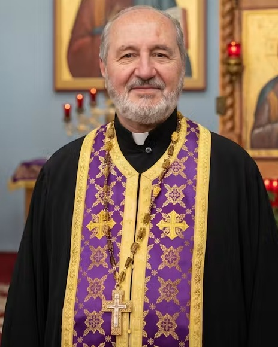

Christ is in our midst! · المسيح بيننا
An Eastern Orthodox parish of the Antiochian Archdiocese, gathered around the Prophet Elias — where anyone, whatever their background, is welcome to come and see.

A word of welcome
Perhaps you were raised in the Orthodox Church, perhaps you are exploring Christianity for the first time, or perhaps you are simply curious about the incense, the icons, and the ancient chant. Whatever brought you, you are welcome — to come, to stand at the back if you like, and to experience the beauty of the Divine Liturgy. Come and see.
Our Mission
We are a worshipping community of the Eastern Orthodox Christian Tradition. We proclaim the Truth given to us by our Lord and Savior Jesus Christ. We preserve the theology of the Nicene Creed and the teachings of the early Church established by the apostles and bishops from the beginning, as given to them directly from Jesus Christ. We participate in corporate liturgical and sacramental worship, and practice the ancient personal traditions for the spiritual life and growth of every single person and community.
I'm New Here
Orthodox worship can feel unfamiliar at first. Here's everything you need so you can relax and simply pray.
The Divine Liturgy begins at 10:00 AM and lasts about 90 minutes. Come as you are; slip in quietly if you're a little late.
There's a parking lot on-site with an accessible entrance. A greeter near the door can point you to everything.
Orthodox venerate icons and stand for much of the service — but sit whenever you need to. Just follow along; no one expects you to know the choreography.
Holy Communion is for prepared Orthodox Christians, but everyone is warmly invited to receive the blessed bread and to join us for coffee hour after.
Children are a joy, not a distraction. Wiggles and whispers are completely at home in an Orthodox parish.
Fr. George loves meeting newcomers. Reach out before you come, or find him after the Liturgy — there's no such thing as a silly question.
Services & Schedule
The unchanging cycle of Orthodox worship, alongside the feasts of the current season.
Holy Week & Feasts
From the Nativity to Holy Week and Pascha, the great feasts have their own added services — many celebrated in both English and Arabic. See the full schedule and the current season's services.
Watch Live & Sermons
Every Divine Liturgy is streamed live on Facebook, so the homebound, the traveling, and the curious can pray alongside us. Missed a Sunday? Browse past liturgies and homilies any time.
Stewardship & Giving
Your stewardship sustains the worship, ministries, and outreach of Saint Elias — from candles and coffee hour to caring for those in need. Give once, or become a monthly steward.
Life Together
More than a Sunday service — a family serving God and neighbor throughout the week.
Forming the next generation in the faith, from little ones through high school.
Byzantine and Arabic chant that carries our prayer to heaven.
Fellowship, service, and retreats for teens and college-age.
Bible study and inquirers' classes for those becoming Orthodox.
Serving the poor and welcoming the stranger in our city.
The Annual Festival, golf tournament, and parish celebrations.
Weekly service times, feast days, and parish news — plus follow us on social media to keep up with everything happening at Saint Elias.
A gentle weekly email. Unsubscribe anytime.